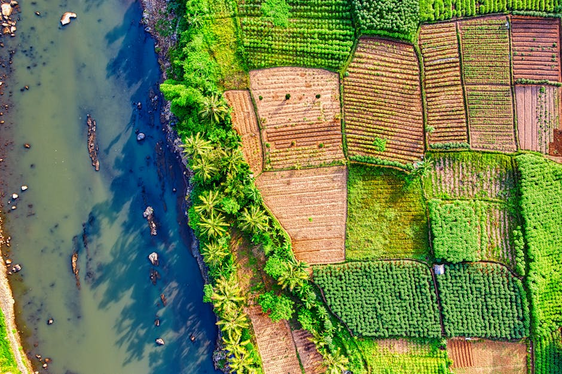

Phenological Dataset for Ecological Forecasting (PheDEF Project)

The health of tropical forest ecosystems faces pressures from climate change, threatening the sustainable supply of leaves, flowers and fruits which provide important resources for wildlife, domestic animals and human settlements. Monitoring the timing of plant life cycle events (phenology) is one effective way to track the availability of plant resources and the impact of climate change and weather variability on their sustainable supply. This dataset is on 48 weeks of liana and tree phenology from ground observations, traditonal ecological knowedge and camera traps in the canopy in two tropical forest ecosystems (a moist semi-deciduous and a dry semi-deciduous forest). The dataset also includes land surface phenology from satellite images and in situ weather data. Phenology data from multiple sources and climate data could be combined via a machine learning model that can be used to predict phenology at community and landscape scales. This data will enhance the representation of tropical African forests in phenology research and contribute meaningful data from tropical African forests for machine learning applications in climate, forests and biodiversity conservation. The images and phenology labels could also be used to train an automation of identifying phenology events in forest canopy images.
Data characteristics
Description of clean folder (raw folder also available)
The folder contains files of clean datasets employed for various datasets.
i. climate_dataset.csv
ii. daily_climate_gr_data.csv
iii. ground_phenology_dataset.csv
iv. pheno_pulse_dataset.csv
v. rbg_chromatic_coordinates.csv
vi. tek_phenology_dataset.csv
vii. Satellite images derived phenology (provided at https://data.4tu.nl)
License
Creative Commons Attribution 4.0 International
Model characteristics
[Auto-enriched from linked project resources]
Five CSV datasets for ecological forecasting of plant phenology in Ghana's tropical forests, collected over 48 weeks (July 2024 to June 2025) at Bobiri Forest Reserve and Boabeng Fiema Monkey Sanctuary. Ground phenology dataset (28 variables): tree and liana observations including flowering phases, fruiting stages, and leaf development. Traditional Ecological Knowledge dataset (10 variables): community-reported phenology from 10 villages. Phenocam dataset (22 variables): RGB indices and vegetation indices (GRVI, exG) from camera monitoring. Citizen science classification dataset: leafing, flowering, and fruiting event classifications. Climate dataset (15 variables): wind, precipitation, temperature, humidity, and seasonal data for both sites. License: CC BY 4.0. Created by University of Energy and Natural Resources (Ghana) and University of Twente.
Source: https://doi.org/10.5281/zenodo.15704554
How to use
[Auto-enriched from linked project resources]
The PheDEF dataset offers a rich, multi-source foundation for ecological forecasting and phenological research in West African tropical forests. It covers 48 weeks of observations (July 2024 -- June 2025) from two sites in Ghana -- Bobiri Forest Reserve and Boabeng Fiema Monkey Sanctuary -- and brings together ground phenology, satellite imagery, climate records, traditional ecological knowledge, phenocam indices, and citizen science classifications, all linked by common date and site identifiers.
You can use this resource to investigate how weather patterns drive flowering and fruiting timing by cross-referencing the ground phenology observations with co-located climate data (temperature, precipitation, humidity, wind, dew point). Researchers working on remote sensing validation can compare the satellite-derived vegetation indices (NDVI, EVI, GNDVI, and seven others from Sentinel-2, Landsat, and MODIS imagery) against field-observed phenological stages to assess how well space-based monitoring captures on-the-ground seasonal changes. The citizen science classifications -- over 100 MB of volunteer labels for leafing, flowering, and fruiting events -- can be benchmarked against the expert ground-truth observations to study the reliability of community-contributed data.
A distinctive feature of PheDEF is its traditional ecological knowledge component: community interviews from 10 villages documenting local phenological calendars, including respondent demographics. This opens the door to research that integrates Indigenous and scientific knowledge systems for forest management and conservation planning.
The ground observation data is available as CSV files from Zenodo (https://zenodo.org/records/15704554), while the satellite imagery and vegetation indices (~30 GB for Sentinel-2, ~1.5 GB for Landsat, plus MODIS GeoTIFFs) are hosted on 4TU.ResearchData. All data is openly accessible and free to download under a CC BY 4.0 license. Detailed documentation on data formats and variable definitions is provided at each repository.
Sources: https://zenodo.org/records/15704554, https://doi.org/10.4121/d97e338b-dc94-4e3d-a473-6dd3d4b48898.v1, https://doi.org/10.4121/9e6b4bca-f3d3-40f3-a8f5-4f71f7790c2f.v1, https://doi.org/10.4121/7e6d7ca3-060d-4ca5-bd83-d779b598c11d.v1
Datasets
Additional resources
About
Powered by / Provided by: University of Energy and Natural Resources (Ghana), University of Twente
Catalyzed by: Lacuna-Fund / Meridian (Climate-call) & FAIR Forward - AI for All (https://www.bmz-digital.global/en/overview-of-initiatives/fair-forward/), GIZ
Financed by: BMZ
Authors: Bismark Ofosu-Bamfo
Contact: Bismark Ofosu-Bamfo (bismark.ofosu-bamfo@uenr.edu.gh), Daniel Yawson (daniel.yawson@uenr.edu.gh), Raul Zurita-Milla (r.zurita-milla@utwente.nl), Rosa Aguilar (r.aguilar@utwente.nl)